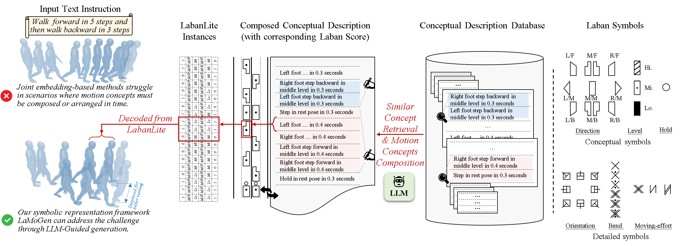
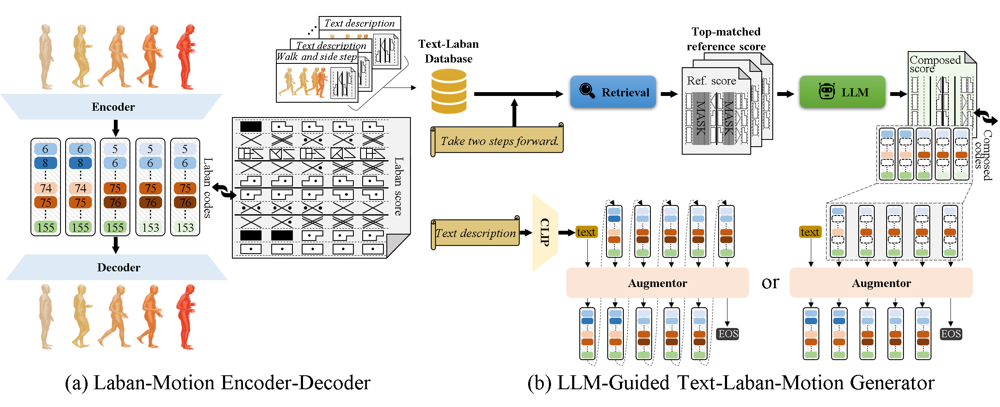

LaMoGen: Language to Motion Generation Through LLM-Guided Symbolic Inference
Abstract
Human motion is highly expressive and naturally aligned with language, yet prevailing methods relying heavily on joint text-motion embeddings struggle to synthesize temporally accurate, detailed motions and often lack explainability. To address these limitations, we introduce LabanLite, a motion representation developed by adapting and extending the Labanotation system. Unlike black-box text-motion embeddings, LabanLite encodes each atomic body-part action (e.g., a single left-foot step) as a discrete Laban symbol paired with a textual template. This abstraction decomposes complex motions into interpretable symbol sequences and body-part instructions, establishing a symbolic link between high-level language and low-level motion trajectories. Building on LabanLite, we present LaMoGen, a Text-to-LabanLite-to-Motion Generation framework that enables large language models (LLMs) to compose motion sequences through symbolic reasoning. The LLM interprets motion patterns, relates them to textual descriptions, and recombines symbols into executable plans, producing motions that are both interpretable and linguistically grounded. To support rigorous evaluation, we introduce a Labanotation-based benchmark with structured description--motion pairs and three metrics that jointly measure text--motion alignment across symbolic, temporal, and harmony dimensions. Experiments demonstrate that LaMoGen establishes a new baseline for both interpretability and controllability, outperforming prior methods on our benchmark and two public datasets. These results highlight the advantages of symbolic reasoning and agent-based design for language-driven motion synthesis.
LLM-Guided Text-Labanotation-Motion Generation

Given a structured text description, methods based on text-motion joint embeddings often fail to generate semantically consistent motion. In contrast, our approach leverages symbolic motion representations, allowing for accurate motion generation. As each symbol is associated with one conceptual description, this design enables LLMs to compose symbolic motion via retrieval augmentation prompting.
Network Architecture

Overview of LaMoGen: (a) The Laban-motion Encoder-Decoder enables bidirectional conversion between motion and Laban instances. These instances are human-readable and LLM-editable, as each instance has a symbolic appearance and a conceptual description, stored in the Conceptual Description Database. (b) LLMs perform high-level symbolic planning via retrieval-augmented prompting, generating sequences of conceptual symbols. The Kinematic Detail Augmentor then enriches these sequences with details through autoregressive generation. Enriched symbol sequences are converted to instances, encoded as codes, and decoded into fine-grained motions.
Supplementary Video
BibTeX
@inproceedings{jiang2026lamogen,
title={LaMoGen: Language to Motion Generation Through LLM-Guided Symbolic Inference},
author={Jiang, Junkun and Au, Ho Yin and Xiang, Jingyu and Chen, Jie},
booktitle={2026 IEEE/CVF Conference on Computer Vision and Pattern Recognition (CVPR)},
pages={1--1},
year={2026},
organization={IEEE}
}